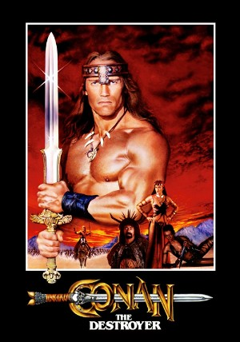

Conan the Destroyer (1984)
ActionAdventureFantasy
| Year | 1984 |
|---|---|
| Rating | R |
| Genre | Action, Adventure, Fantasy |
Conan is commissioned by the evil queen Taramis to safely escort a teen princess and her powerful bodyguard to a far away castle to retrieve the magic Horn of Dagoth. Unknown to Conan, the queen plans to sacrifice the princess when she returns and inherit her kingdom after the bodyguard kills Conan. The queen's plans fail to take into consideration Conan's strength and cunning and the abilities of his sidekicks: the eccentric wizard Akiro, the warrior woman Zula, and the inept Malak. Together the hero and his allies must defeat both mortal and supernatural foes in this voyage to sword-and-sorcery land.